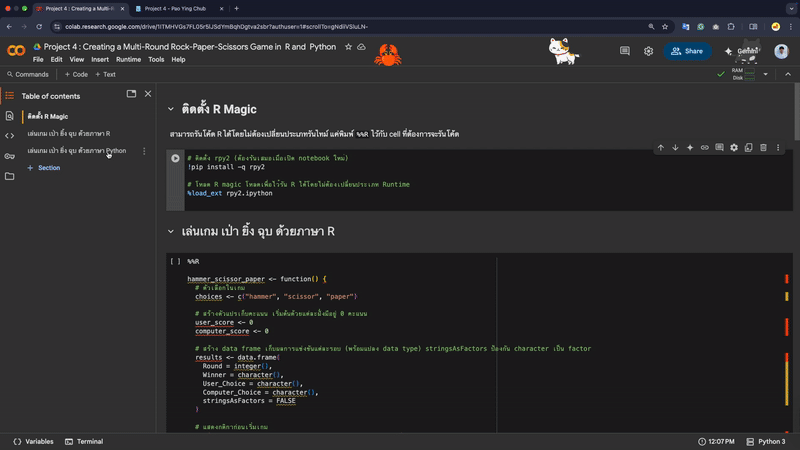
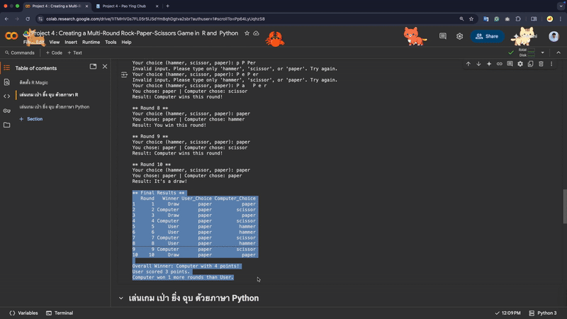

สำรวจการกระจายตัวด้วย Boxplot และใช้การวัดตำแหน่ง quartile และ Percentile ในการหา
R Scode, F Score และ M Score
แบ่งกลุ่มลูกค้าออกเป็นทั้งหมด 11 กลุ่ม พร้อม Level Business Impact จากตัว RFM Score
คำนวณหาจำนวนลูกค้าแต่ละกลุ่ม
ทำการ Plot Tree Map RFM Analysis เพื่อดูการกระจายตัวของกลุ่มลูกค้าแต่ละกลุ่ม
RFM Analysis Using Python R : คล้ายกับการวิเคราะห์ด้วย Python เลยแต่ใช้เป็นภาษา R
แต่ตัดตัวตอนสำรวจข้อมูลด้วย Boxplot ออกไป จะเน้นเป็นการเขียน R เพื่อวิเคราะห์ RFM เลย
Export Customer Data in California (CSV Format) ➤ ส่งออกข้อมูลลุฏค้าที่อยู่ในรัฐ Califonia
Export Order Data (CSV): Customers in California and Texas, 2017 ➤ ส่งออกข้อมูลลุฏค้าที่อยู่ในรัฐ
Califonia และ Texas ในปี 2017
Sales Analysis 2017: Total, Average, and Standard Deviation by Month, Day, and Order
➤ คำนวณยอดขายโดยเฉลี่ยต่อวัน ต่อเดือน ต่อออเดอร์ ในปี 2017
Highest Profit Segment in 2018
➤ กลุ่มลูกค้าที่สร้างกำไรให้เราสูงสุดใน 2018
Top 5 States with the Lowest Total Sales (15 April – 31 December 2019)
➤ รัฐที่มียอดขายต่ำสุด 5 อันดับแรกช่วงวันที่ตั้งแต่ 151 เมษายน ถึึง 31 ธันวาคม 2019
Sales Proportion (%) in West and Central Regions, 2019
➤ สัดส่วนยอดขายของภูมิภาคตะวันตกรวมกับภูมิภาคตอนกลาง เทียบกับ ยอดขายรวมทั้งหมด ในปี 2019
Top 10 Products by Order Volume vs. Total Sales (2019–2020)
➤ ยอดขายสินค้าโดยเฉลี่ยต่อออเดอร์ 10 อันดับแรกในปี 2019 ถึง 2020
Visual Insights: At Two Plots
➤ ดูการกระจายตัวของยอดขาย เทียบกำไร ด้วย Scatter Plot
และ ดูการกระจายตัวของจำนวนออเดอร์ เทียบกับยอดขายด้วย Histogram
P4 : Creating a Multi-Round Rock-Paper-Scissors Game in R and Python
สร้างเกมเป่ายิ้งฉุบแบบหลายรอบ โดยใช้ภาษา R และ Python
โดยมีการเก็บสถิติการเล่นของผู้เล่นและ Computer ว่าตอนจบ 10 รอบใครจะเป็นผู้ชนะ
เป็นโปรเจกต์ที่ฝึกทักษะ Control Flow เป็นหลัก if, for,
while ซึ่งเป็น Programimng ที่ส่วนใหญ่ใช้กัน
graph TD
A[Start Function: hammer_scissor_paper] --> B[Initialize Variables and Rules Displayed]
B --> C[Loop Round 1 to 10]
C --> D[Computer chooses randomly]
D --> E[Input loop: Ask for user input]
E --> F{Input is 'check'?}
F -- Yes --> G[Show scores and results table]
G --> E
F -- No --> H{Input is valid?}
H -- No --> I[Show invalid input message]
I --> E
H -- Yes --> J[Show both choices]
J --> K{Compare choices}
K -- Draw --> L[Set winner = Draw]
K -- User wins --> M[Set winner = User\n+1 to user_score]
K -- Computer wins --> N[Set winner = Computer\n+1 to computer_score]
L --> O[Record result to data.frame]
M --> O
N --> O
O --> P{All 10 rounds done?}
P -- No --> C
P -- Yes --> Q[Show all round results]
Q --> R{Who has more points?}
R -- User --> S[Announce: User Wins]
R -- Computer --> T[Announce: Computer Wins]
R -- Draw --> U[Announce: It's a Draw]
S --> V[End]
T --> V
U --> V
Example
Rock-Paper-Scissors Game WorkFlow : ⬇︎
graph TD
A[Start Function: hammer_scissor_paper] --> B[Initialize Variables and Rules Displayed]
B --> C[Loop Round 1 to 10]
C --> D[Computer chooses randomly]
D --> E[Input loop: Ask for user input]
E --> F{Input is 'check'?}
F -- Yes --> G[Show scores and results table]
G --> E
F -- No --> H{Input is valid?}
H -- No --> I[Show invalid input message]
I --> E
H -- Yes --> J[Show both choices]
J --> K{Compare choices}
K -- Draw --> L[Set winner = Draw]
K -- User wins --> M[Set winner = User\n+1 to user_score]
K -- Computer wins --> N[Set winner = Computer\n+1 to computer_score]
L --> O[Record result to data.frame]
M --> O
N --> O
O --> P{All 10 rounds done?}
P -- No --> C
P -- Yes --> Q[Show all round results]
Q --> R{Who has more points?}
R -- User --> S[Announce: User Wins]
R -- Computer --> T[Announce: Computer Wins]
R -- Draw --> U[Announce: It's a Draw]
S --> V[End]
T --> V
U --> V
A Video Simulation of Rock–Paper–Scissors Game Using R : ⬇︎

A Video Simulation of Rock–Paper–Scissors Game Using Python :
⬇︎

Read More
⭐️ P5 : EDA and Comparison of NYC Flights Data (2013 vs. 2023) with R
ถ้าหากคุณต้องการวางแผนพักร้อน โดยการไปเที่ยวที่รัฐใด รัฐหนึ่งในสหรัฐอเมริกา และ คุณอาศัยอยู่ New York
หรืออยู่บริเวณใกล้ๆกับสนามบิน EWR(NJ), JFK(NY), LGA(NY) เหล่านี้ ใน R มีข้อมูลเกี่ยวกับเที่ยวบินของ New York City
ซึ่งเป็นข้อมูลจริง และมีทั้งหมด 2 ปี คือ 2013 และ 2023
ดังนั้น เราจะมาสำรวจเพื่อวิเคราะห์ข้อมูล (EDA) เที่ยวบินของ New York City (NYC) ในปี 2013 และ 2023 โดยใช้ภาษา R
เพื่อที่จะ make decision better ตามคำถามต่อไปนี้
 Google Sheets
Google Sheets